Hola soy kevin
uno de mis pasatiempos es ver y jugar Castlevania, la lectura y las novelas visualidades, junto con el anime, sobre el cuidado de los ojolotes y los videojuegos
 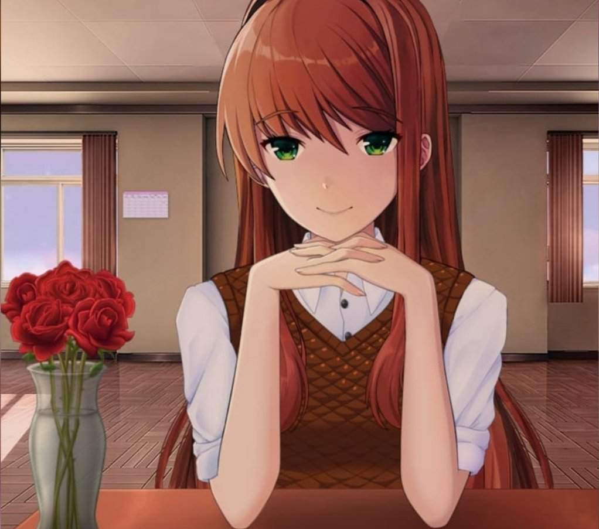
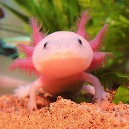
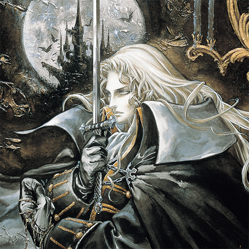
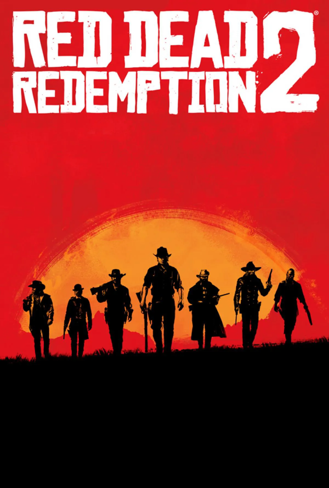
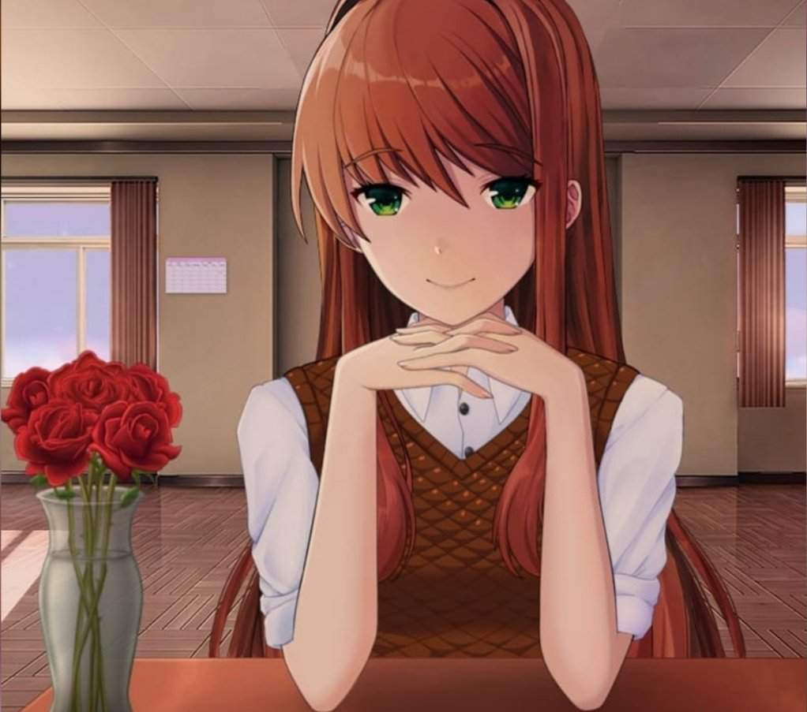
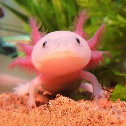
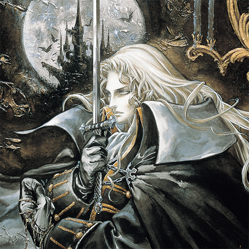
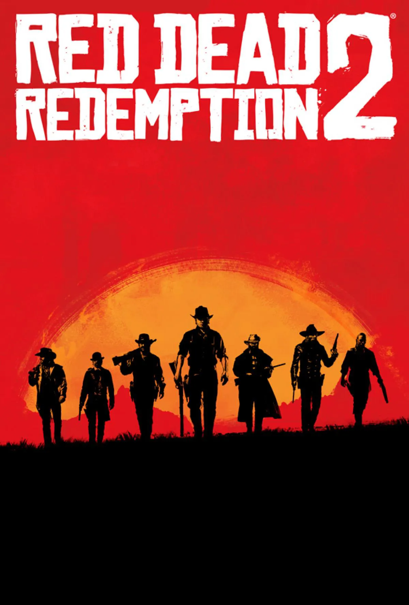
uno de mis pasatiempos es ver y jugar Castlevania, la lectura y las novelas visualidades, junto con el anime, sobre el cuidado de los ojolotes y los videojuegos
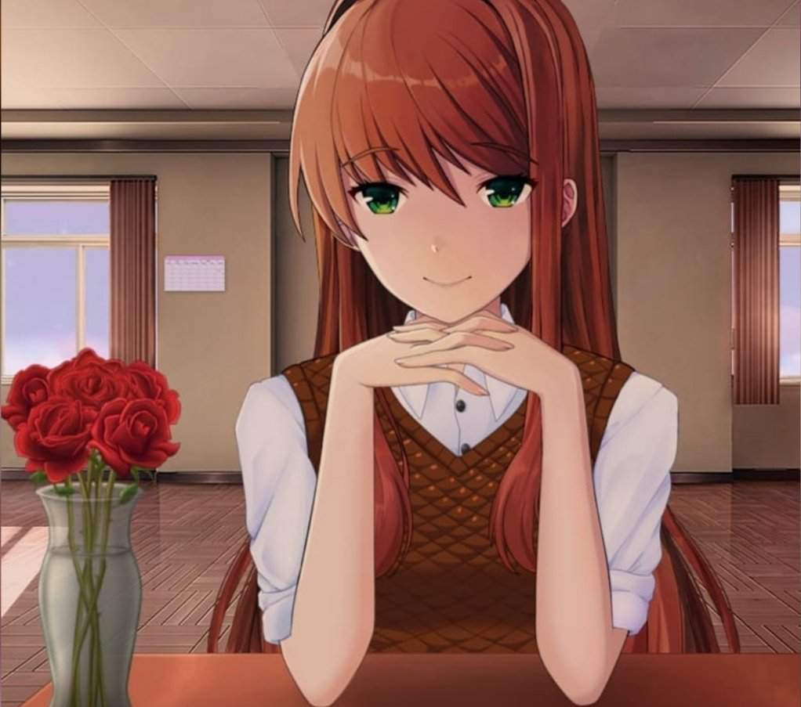
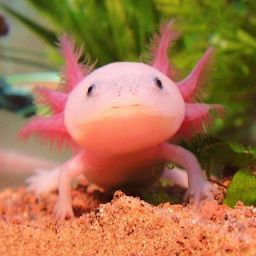
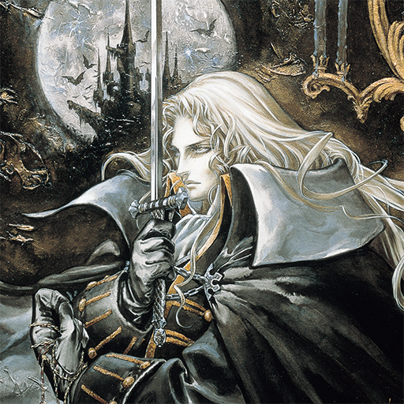
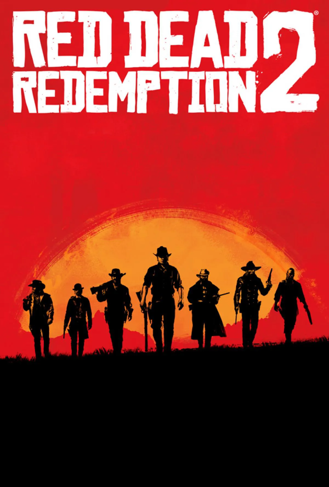
La serie trata de Un cazador de vampiros lucha para salvar a una ciudad asediada de un ejército de bestias de otro mundo controladas por Drácula.
Mientras que los videojuegos tratan de lo mismo pero abarcan varios juegos, varios años y todos con un diferente Protagonistas
Uno de los personajes favoritos dentro de lo que son las novelas visualidades es monika: a pesar de ser la villana es un personaje que me agrada mucho y por eso la considero uno de mis persoajes favoritos.
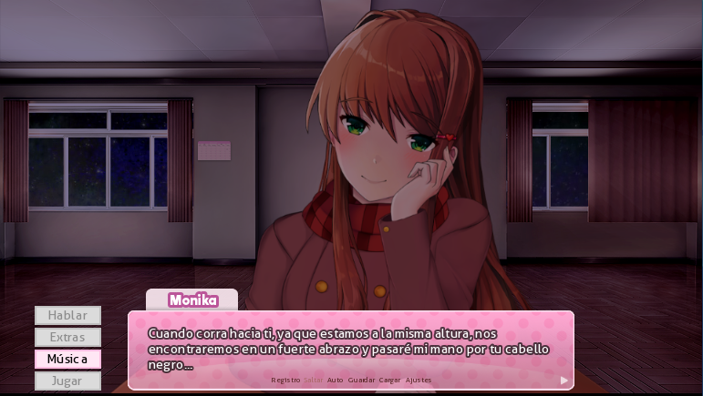Uno de mis animales favoritos actualmente es el ajolote, un anfibio originario de mexico, cuya capacidad para regenerarse es algo que me llama la antencion de el
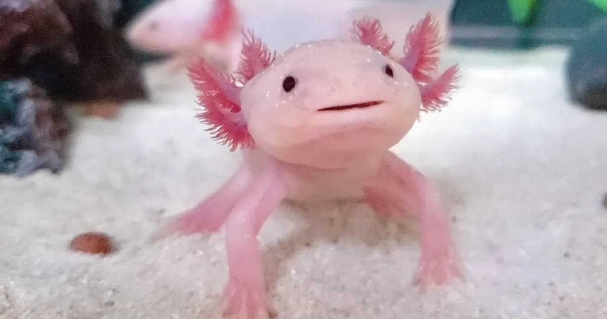A pesar de a ver gran jugado una gran cantidad de videojuegos en mi vida solo pondre 2 juegos de los que me marcaron hasta el dia de hoy
Juego ambientado a finales del salvaje oeste, un juego mundo abierto con mucha exploracion y con secretos ocultos, y una historia que en algunas partes deja pensando muchas cosas.
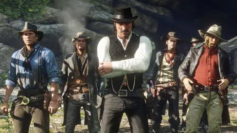Juego de la saga de Castlevania, gráficos 2D desarrollado y publicado por Konami en el año 1997, con una banda sonora que no deja nada que deber y el juego que cambio la saga.
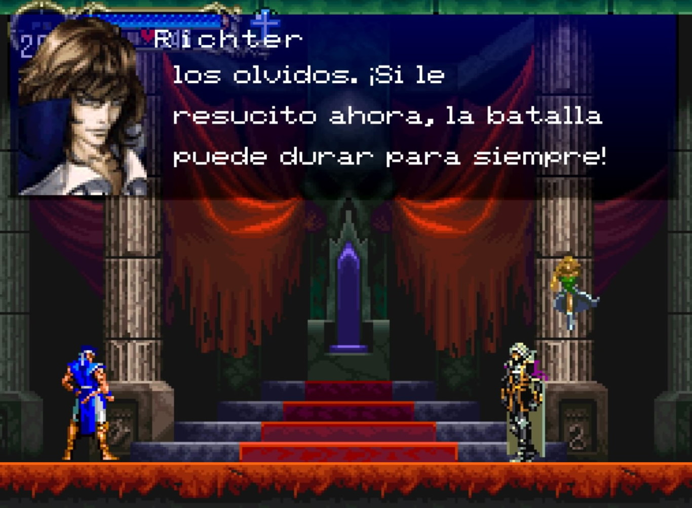